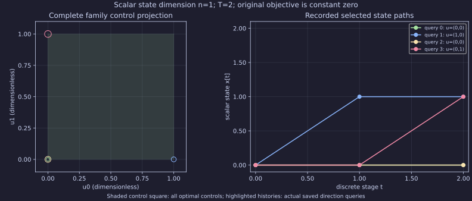

Download the complete offline ZIP for every raw attempt, stopped probe, development diagnostic and profiler sample. Extract it to browse the original relative attempt links. Historical absolute paths in receipts and CMake caches describe the capture host; use REPRODUCE.md commands instead.
Inconclusive comparison. These bounded Release observations measure matched full optimizer families and real direction-LP queries at T=2/4/8. They establish neither a performance ranking, asymptotic scaling nor a hard real-time guarantee.
Source 3b98f5b02838909981b7ce70378f58dc25c74457; binary SHA-256 c5da12e86833b5c2ff8e52a00c1a2974da321b7f714b7a8fcc173a36cb0d4cf5. 170 attempts retained; check statuses {'verified': 168, 'inconclusive': 2}. The schedule requests 6 alternating measured pairs after a warmup pair, with a fresh process per strategy attempt. Group n records actual successful observations; failures remain retained. See environment/resources, independent checks, machine-readable distributions and collector-mode differences.
Input: x[t+1]=x[t]+u[t], x[0]=0, 0≤u[t]≤1. HORIZON-01 minimizes x[T] and has only the all-zero optimal history; it requests one witness. FAMILY-QUERY-FLAT minimizes the constant zero and retains every feasible control history; it requests 2T observations over ±control basis directions. Fewer distinct observations than requested is a search shortfall, never a uniqueness conclusion. The independent exact-dyadic checker proves both H-family inclusions and checks each selected history and its associated direction minimum.
The state is scalar. The square uses the two control coordinates u0 and u1; all controls in [0,1]² are optimal and x1=u0, x2=u0+u1. The highlighted points and scalar state paths are actual recorded query selections; no new solve is run while rendering.

Times below are medians [min, max] in milliseconds. Collector on/off are separate groups from the same binary. Actual LP sums are observed operation spans, including the registered query runner; they are not isolated native solver time. Synthesis includes producer execution plus compiled verifier/registry validation. Collector-plan construction is outside the per-phase timers; the saved end-to-end process-wall distributions include it, startup and serialization. Isolated verifier time is unavailable; generic membership/slice APIs are unsupported.
| Fixture / T | Strategy / collector | Synthesis ms | Selector ms | Actual LP ms | H shape / JSON bytes | Returned / distinct |
|---|---|---|---|---|---|---|
| FAMILY-QUERY-FLAT / 2 | csl.synthesis.reach-back / off (n=6) | 6.824 [6.522, 7.118] | 1.180 [1.143, 1.227] | unobserved | 5 cols, 4 inequalities, 3 equalities / 252 | 4 / [3, 3] |
| FAMILY-QUERY-FLAT / 2 | csl.synthesis.reach-back / on (n=6) | 12.479 [11.730, 15.950] | 2.752 [2.672, 2.950] | 1.223 [1.156, 1.295] | 5 cols, 4 inequalities, 3 equalities / 252 | 4 / [3, 3] |
| FAMILY-QUERY-FLAT / 2 | csl.synthesis.strategy-b / off (n=6) | 1.268 [1.260, 2.919] | 1.212 [1.195, 2.800] | unobserved | 5 cols, 4 inequalities, 3 equalities / 314 | 4 / [3, 3] |
| FAMILY-QUERY-FLAT / 2 | csl.synthesis.strategy-b / on (n=6) | 2.998 [2.788, 4.539] | 3.203 [2.694, 6.629] | 1.365 [1.228, 2.850] | 5 cols, 4 inequalities, 3 equalities / 314 | 4 / [3, 3] |
| FAMILY-QUERY-FLAT / 4 | csl.synthesis.reach-back / off (n=6) | 15.786 [14.820, 17.633] | 2.479 [2.442, 2.626] | unobserved | 9 cols, 8 inequalities, 5 equalities / 446 | 8 / [5, 5] |
| FAMILY-QUERY-FLAT / 4 | csl.synthesis.reach-back / on (n=6) | 23.876 [23.444, 25.444] | 6.082 [5.982, 6.391] | 2.560 [2.546, 2.740] | 9 cols, 8 inequalities, 5 equalities / 446 | 8 / [5, 5] |
| FAMILY-QUERY-FLAT / 4 | csl.synthesis.strategy-b / off (n=6) | 3.094 [3.066, 3.504] | 2.599 [2.567, 2.766] | unobserved | 9 cols, 8 inequalities, 5 equalities / 508 | 8 / [5, 5] |
| FAMILY-QUERY-FLAT / 4 | csl.synthesis.strategy-b / on (n=6) | 5.695 [4.579, 10.929] | 6.367 [5.967, 8.399] | 2.679 [2.587, 3.578] | 9 cols, 8 inequalities, 5 equalities / 508 | 8 / [5, 5] |
| FAMILY-QUERY-FLAT / 8 | csl.synthesis.reach-back / off (n=6) | 43.608 [39.481, 50.208] | 6.242 [5.876, 7.012] | unobserved | 17 cols, 16 inequalities, 9 equalities / 1123 | 16 / [9, 9] |
| FAMILY-QUERY-FLAT / 8 | csl.synthesis.reach-back / on (n=6) | 58.194 [54.598, 67.512] | 19.620 [16.957, 23.522] | 7.066 [6.219, 8.491] | 17 cols, 16 inequalities, 9 equalities / 1123 | 16 / [9, 9] |
| FAMILY-QUERY-FLAT / 8 | csl.synthesis.strategy-b / off (n=6) | 16.837 [14.302, 20.565] | 6.217 [6.014, 7.001] | unobserved | 17 cols, 16 inequalities, 9 equalities / 1185 | 16 / [9, 9] |
| FAMILY-QUERY-FLAT / 8 | csl.synthesis.strategy-b / on (n=6) | 17.153 [15.618, 19.806] | 18.712 [16.812, 20.343] | 6.994 [6.241, 7.650] | 17 cols, 16 inequalities, 9 equalities / 1185 | 16 / [9, 9] |
| HORIZON-01 / 2 | csl.synthesis.reach-back / off (n=6) | 7.692 [7.261, 10.685] | 0.382 [0.322, 0.547] | unobserved | 5 cols, 4 inequalities, 4 equalities / 266 | 1 / [1, 1] |
| HORIZON-01 / 2 | csl.synthesis.reach-back / on (n=6) | 14.249 [12.412, 19.598] | 1.275 [1.101, 1.534] | 0.399 [0.340, 0.479] | 5 cols, 4 inequalities, 4 equalities / 266 | 1 / [1, 1] |
| HORIZON-01 / 2 | csl.synthesis.strategy-b / off (n=6) | 1.652 [1.608, 2.373] | 0.401 [0.329, 0.632] | unobserved | 5 cols, 4 inequalities, 4 equalities / 328 | 1 / [1, 1] |
| HORIZON-01 / 2 | csl.synthesis.strategy-b / on (n=6) | 3.412 [3.104, 5.213] | 1.120 [1.098, 1.928] | 0.390 [0.358, 0.577] | 5 cols, 4 inequalities, 4 equalities / 328 | 1 / [1, 1] |
| HORIZON-01 / 4 | csl.synthesis.reach-back / off (n=6) | 16.265 [15.494, 17.261] | 0.437 [0.402, 1.056] | unobserved | 9 cols, 8 inequalities, 6 equalities / 468 | 1 / [1, 1] |
| HORIZON-01 / 4 | csl.synthesis.reach-back / on (n=6) | 25.818 [23.812, 30.245] | 1.376 [1.333, 1.471] | 0.450 [0.420, 0.551] | 9 cols, 8 inequalities, 6 equalities / 468 | 1 / [1, 1] |
| HORIZON-01 / 4 | csl.synthesis.strategy-b / off (n=6) | 3.660 [3.540, 4.105] | 0.471 [0.444, 0.549] | unobserved | 9 cols, 8 inequalities, 6 equalities / 530 | 1 / [1, 1] |
| HORIZON-01 / 4 | csl.synthesis.strategy-b / on (n=6) | 5.324 [5.106, 6.735] | 1.343 [1.300, 1.739] | 0.433 [0.425, 0.580] | 9 cols, 8 inequalities, 6 equalities / 530 | 1 / [1, 1] |
| HORIZON-01 / 8 | csl.synthesis.reach-back / off (n=6) | 44.010 [41.141, 49.782] | 0.595 [0.571, 0.679] | unobserved | 17 cols, 16 inequalities, 10 equalities / 1161 | 1 / [1, 1] |
| HORIZON-01 / 8 | csl.synthesis.reach-back / on (n=6) | 65.566 [55.264, 68.112] | 2.011 [1.670, 2.373] | 0.586 [0.499, 0.675] | 17 cols, 16 inequalities, 10 equalities / 1161 | 1 / [1, 1] |
| HORIZON-01 / 8 | csl.synthesis.strategy-b / off (n=6) | 18.532 [15.965, 23.520] | 0.671 [0.647, 0.858] | unobserved | 17 cols, 16 inequalities, 10 equalities / 1223 | 1 / [1, 1] |
| HORIZON-01 / 8 | csl.synthesis.strategy-b / on (n=6) | 18.288 [17.272, 19.155] | 1.799 [1.715, 2.423] | 0.576 [0.516, 0.669] | 17 cols, 16 inequalities, 10 equalities / 1223 | 1 / [1, 1] |
Per process: 300 CPU seconds, 150-second wall timeout, 8 GiB address space; library context deadline 120 seconds; one requested outer/backend thread. Peak RSS and per-child CPU are wait4 observations. Native heap budgeting remains unsupported. All failures and deliberate materialization-limit refusals stay in the raw attempt directories. Current host load and compiler interference are retained; timing differences are descriptive. A separate source-level limiter profile and native-clock instrumentation overhead remain issue #95 gates. No unique limiter is attributed from these numbers.
Reproduce with the commands in the source capture script and benchmark README, then run python3 source/check_family_query.py . and python3 source/render_family_query.py .. Input bytes are in scenarios/; raw stdout, stderr and resource receipts are in attempts/. The report is a reading layer over these saved records. Pages publication and platform/installed-consumer delivery checks are pending integration; #95 remains open.
separate whole-process gprof CPU sampling; driver compiled -pg, static-library symbols sampled; uninstrumented library call graph incomplete. inconclusive: no unique limiter; exact-H feasibility/normalization, row copies and JSON/OBS work all sampled; whole-process mixing, incomplete library call graph and 10ms sampling prevent attribution to an isolated phase. The profile binary differs from the primary unprofiled binary; these attempts are excluded from the timing groups. See profile provenance/resources and raw gprof symbols.